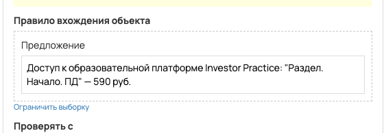
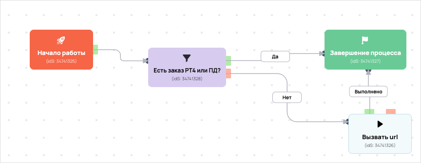

Передача в амо заявка АМ ПД VIP-участие
- ID процесса:
2009273 - Объект: Заказы
- Статус: Не запущен
- Внутренняя страница: 2009273. Передача в амо заявка АМ ПД VIP-участие
- GetCourse: Карточка | Схема процесса
Скриншоты процесса


Коротко для заказчика
- Главное: В процесс попадают заказы по правилу: Предложение (ID: 6583298).
- Дальше он передает данные как: Формы и анкеты.
- Связанных баз Vakas: 1.
Понятное описание процесса
- Процесс работает с объектом GetCourse: Заказы. Текущий статус процесса: Не запущен.
- На вход попадают данные так: В процесс попадают заказы по правилу: Предложение (ID: 6583298).
- Внутри схемы есть дополнительные проверки/ожидания: 1. Основные блоки: «Есть заказ РТ4 или ПД?».
- Дальше процесс делает прямые вызовы Vakas: 1. Напрямую задействованы базы: 72260.
- Передача: база 72260: Формы и анкеты. Передаются параметры:
name,email,phone,getcourse_user_id,utm_source,utm_medium,utm_campaign,utm_content,utm_term. - Что происходит в amoCRM: по базе 72260 нет данных в текущем дампе Vakas
Ход процесса в GetCourse
- Схема состоит из 6 блоков и 9 переходов.
- По типам: стартов 1, условий/ожиданий 1, вызовов URL 3, изменений полей 0, финалов 1.
Блоки процесса: что делают и зачем нужны:
- Блок
34741325«Начало работы» (старт). Что делает: Запускает выполнение схемы для объекта, который попал под правило входа процесса. Зачем нужен: Нужен как точка входа: от него GetCourse начинает движение объекта по схеме. Дальше: если результат «Выполнено», идет в «Есть заказ РТ4 или ПД?». - Блок
34741328«Есть заказ РТ4 или ПД?» (условие). Что делает: Проверяет условие: Принадлежит пользователю. Зачем нужен: Нужен, чтобы разделить поток: подходящих пользователей/заказы отправить дальше, неподходящих перевести на другую ветку или завершить. Дальше: если результат «Нет», идет в «Вызвать url»; если результат «Да», идет в «Завершение процесса». - Блок
34741327«Завершение процесса» (завершение). Что делает: Завершает ветку процесса после выполненных проверок и действий. Зачем нужен: Нужен, чтобы закрыть текущую ветку и не гонять объект по процессу повторно. Дальше переходов нет: это конечная точка ветки. - Блок
34741326«Вызвать url» (вызов URL). Что делает: Передает в Vakas: база 72260, канал «Формы и анкеты» (GET); параметры:name,email,phone,getcourse_user_id,utm_source,utm_medium,utm_campaign,utm_content,utm_term; timeout 300 сек. Зачем нужен: Нужен, чтобы передать подходящий объект в база 72260; дальше после вызова Vakas обрабатывает данные и передает их в amoCRM. Дальше: если результат «Ошибка», идет в «n8n fail после Вызвать url #34741326»; если результат «Выполнено», идет в «n8n success после Вызвать url #34741326». - Блок
43524326«n8n success после Вызвать url #34741326» (вызов URL). Что делает: Вызывает внешний URL: testn8n.easydrafting.ru/webhook/gc-vakas-retry-events (POST); параметры:event,clientED,gcDomain,action,process_id,process_name,entity_type,object_id,order_id,user_id,name,email,phone,error_message; timeout 10 сек. Зачем нужен: Нужен, чтобы процесс GetCourse передал данные во внешний сервис testn8n.easydrafting.ru. Дальше: если результат «Ошибка», идет в «Завершение процесса»; если результат «Выполнено», идет в «Завершение процесса». - Блок
43524327«n8n fail после Вызвать url #34741326» (вызов URL). Что делает: Вызывает внешний URL: testn8n.easydrafting.ru/webhook/gc-vakas-retry-events (POST); параметры:event,clientED,gcDomain,action,process_id,process_name,entity_type,object_id,order_id,user_id,name,email,phone,error_message; timeout 10 сек. Зачем нужен: Нужен, чтобы процесс GetCourse передал данные во внешний сервис testn8n.easydrafting.ru. Дальше: если результат «Ошибка», идет в «Есть заказ РТ4 или ПД?»; если результат «Выполнено», идет в «Есть заказ РТ4 или ПД?».
Что именно входит в процесс
- В процесс попадают заказы по правилу: Предложение (ID: 6583298).
Как именно настроено правило
- Предложение (ID: 6583298)
Куда и как передается дальше
| База Vakas | Что передается | Этап в amoCRM | Что происходит со сделкой |
|---|---|---|---|
| База 72260 | Формы и анкеты | не найдено в дампе | База не найдена в актуальном дампе. |